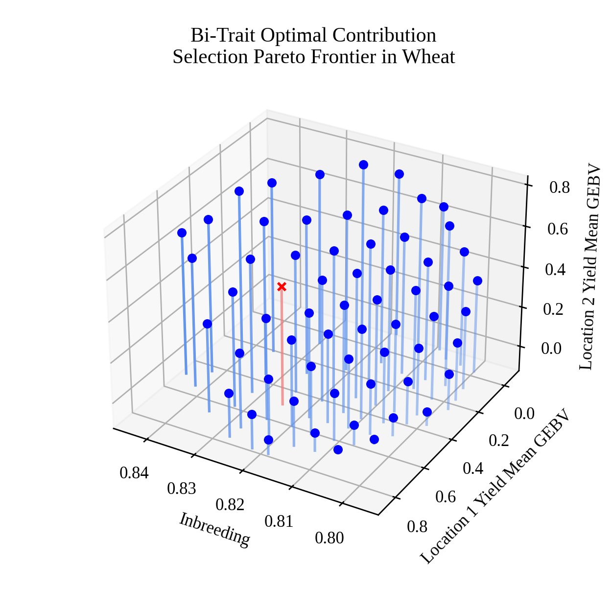

Tri-Objective Optimal Contribution Selection Pareto Frontier Visualization in Wheat#
Optimial Contribution Selection (OCS) is a diversity preservation strategy commonly used in breeding. In this example, we demonstrate how to load an external model into PyBrOpS, perform a multi-objective optimization for a tri-objective OCS problem in a subset search space, and visualize an estimate of the Pareto frontier. In the tri-objective OCS problem, we seek to maximize the mean genomic estimated breeding values (GEBVs) for two traits and minimize the inbreeding between individuals in the selected subset, simultaneously.
Loading wheat datasets in R#
First, we will load several libraries in R, namely the BGLR package which contains the dataset we’ll be using, and the rrBLUP package which contains the routines we’ll be using to fit our models. The wheat dataset in the BGLR package contains estimated breeding values for wheat yield in four different locations.
# load libraries
library(BGLR)
library(rrBLUP)
# load wheat dataset from BGLR
data(wheat)
# get marker matrix in {0,1,2} encoding
Z = 2 * wheat.X
Fitting RR-BLUP models for each of four traits in R#
After loading the dataset, we fit an RR-BLUP models for each of our traits of interest.
# fit rrBLUP models for yield data in location 1, 2, 3, 4
fm1 = mixed.solve(y = wheat.Y[,1], Z = Z)
fm2 = mixed.solve(y = wheat.Y[,2], Z = Z)
fm3 = mixed.solve(y = wheat.Y[,3], Z = Z)
fm4 = mixed.solve(y = wheat.Y[,4], Z = Z)
Writing RR-BLUP models to file#
Finally, we save our marker matrix and model parameters to several CSV files. Information in these files will be imported into PyBrOpS.
# extract fixed effects (intercepts) for yield models in locations 1, 2, 3, 4
beta_df = data.frame(
"fixed_effect" = c("intercept"),
"yield1" = fm1$beta,
"yield2" = fm2$beta,
"yield3" = fm3$beta,
"yield4" = fm4$beta
)
# extract additive marker effects for yield models in locations 1, 2, 3, 4
u_a_df = data.frame(
"marker_name" = colnames(Z),
"yield1" = fm1$u,
"yield2" = fm2$u,
"yield3" = fm3$u,
"yield4" = fm4$u
)
# save the marker matrix to csv file in {0,1,2} format
write.csv(Z, "wheat_markers.csv")
# save the fixed effects to csv file
write.csv(beta_df, "wheat_intercepts.csv", row.names = FALSE)
# save the marker effects to csv file
write.csv(u_a_df, "wheat_marker_effects.csv", row.names = FALSE)
Loading Required Modules and Seeding the global PRNG#
After exporting our markers and models, we switch over to Python and load important libraries that we’ll be needing as well as setting a random seed for reproducibility.
import os
import numpy
import pandas
from matplotlib import pyplot
from PIL import Image
from matplotlib import rcParams
rcParams['font.family'] = 'Liberation Serif' # set default font
import pybrops
from pybrops.breed.prot.sel.OptimalContributionSelection import OptimalContributionSubsetSelection
from pybrops.model.gmod.DenseAdditiveLinearGenomicModel import DenseAdditiveLinearGenomicModel
from pybrops.opt.algo.NSGA3SubsetGeneticAlgorithm import NSGA3SubsetGeneticAlgorithm
from pybrops.popgen.cmat.fcty.DenseMolecularCoancestryMatrixFactory import DenseMolecularCoancestryMatrixFactory
from pybrops.popgen.gmat.DenseGenotypeMatrix import DenseGenotypeMatrix
# seed python random and numpy random
pybrops.core.random.prng.seed(92750176)
Reading External Data#
Loading Genotypic Data from a CSV File#
First, we load our marker data and use it to construct a dense genotype matrix.
# read marker matrix from file
wheat_markers_df = pandas.read_csv("wheat_markers.csv", index_col=0)
# construct a genotype matrix from read inputs
gmat = DenseGenotypeMatrix(
mat = wheat_markers_df.to_numpy('int8'),
taxa = wheat_markers_df.index.to_numpy(object),
vrnt_name = wheat_markers_df.columns.to_numpy(object),
ploidy = 2,
)
Loading Genomic Model Data from CSV Files#
Next, we load our RR-BLUP models from file. We opt to only select the first two trait models and construct an additive linear genomic model from which we can calculate GEBVs.
# read intercepts from file
wheat_intercepts_df = pandas.read_csv("wheat_intercepts.csv", index_col=0)
# read marker effects from file
wheat_marker_effects_df = pandas.read_csv("wheat_marker_effects.csv", index_col=0)
# construct an additive linear genomic model from read inputs
# use only the first two traits to create the genomic model
algmod = DenseAdditiveLinearGenomicModel(
beta = wheat_intercepts_df.to_numpy(float)[:,0:2],
u_misc = None,
u_a = wheat_marker_effects_df.to_numpy(float)[:,0:2],
model_name = "bi-trait",
)
Constructing a Breeding Value Matrix#
Using the loaded genotype matrix and RR-BLUP models, we calculate the GEBVs of our genotypes.
# calculate the GEBVs from the genotype matrix
bvmat = algmod.gebv(gtobj = gmat)
Constructing an Optimal Contribution Subset Selection Object#
Next, we construct an optimal contribution selection protocol object. For our optimizations, we specifically want to use an identity-by-state kinship matrix. We create an NSGA-III optimization algorithm object and use it for selection protocol object.
# create coancestry matrix factory object for creating
# identity by state coancestry matrices
ibscmatfcty = DenseMolecularCoancestryMatrixFactory()
# create custom multi-objective algorithm for optimization
algo = NSGA3SubsetGeneticAlgorithm(
ngen = 1500, # number of generations to evolve
pop_size = 100, # number of parents in population
nrefpts = 91, # number of reference points for optimization
)
# construct a subset selection problem for OCS
selprot = OptimalContributionSubsetSelection(
ntrait = 2, # number of expected traits
cmatfcty = ibscmatfcty, # identity by state
unscale = True, # whether to unscale breeding values
ncross = 10, # number of breeding crosses to select
nparent = 2, # number of parents per breeding cross to select
nmating = 1, # number of times parents are mated per cross
nprogeny = 40, # number of progenies to derive from a mating event
nobj = 3, # number of objectives (1+ntrait)
moalgo = algo, # custom multi-objective algorithm
# leave all other arguments as their default values
)
Estimating the Pareto Frontier#
Finally, we perform the multi-objective optimization and identify a Pareto frontier.
# estimate pareto frontier
selsoln = selprot.mosolve(
pgmat = None, # argument not utilized
gmat = gmat, # ``gmat`` argument required
ptdf = None, # argument not utilized
bvmat = bvmat, # ``bvmat`` argument required
gpmod = None, # argument not utilized
t_cur = 0, # argument not utilized
t_max = 0, # argument not utilized
)
Select a Single Point from the Pareto Frontier#
Next, we algorithmically select a single point from the Pareto frontier. The selection strategy is briefly explained. First, we take our non-dominated points identified from our multi-objective optimization and normalize them with respect to each objective. Normalized objectives fall in the 0 to 1 range. Next, we draw out a pesudoweight vector according to our preferences and calculate the distance between each normalized point and the preference vector. The function below does this.
# define a function to calculate distances from a pseudoweight vector
def trans_ndpt_pseudo_dist(
ndptmat: numpy.ndarray,
objfn_minmax: numpy.ndarray,
objfn_pseudoweight: numpy.ndarray,
**kwargs: dict
) -> numpy.ndarray:
"""
Transform a set of non-dominated points by calculating their distances to a
vector.
Parameters
----------
ndptmat : numpy.ndarray
A point coordinate array of shape (npt, nobj) where 'npt' is the number
of points and 'nobj' is the number of objectives (dimensions).
This array contains input points for calculating the distance between a
point to a pseudoweight vector.
objfn_minmax : numpy.ndarray
An objective function min/max sign indicator array of shape ``(nobj,)``.
This array contains sign indicator variables for whather an objective is
minimizing (-1.0) or maximizing (1.0).
objfn_pseudopreference : numpy.ndarray
An objective function pseudoweight array of shape ``(nobj,)``
kwargs : dict
Additional keyword arguments. Not used by this function.
Returns
-------
out : numpy.ndarray
An array of shape (npt,) containing the distance between each point
to the vector.
"""
# input assertions
assert numpy.all(objfn_pseudoweight >= 0.0)
assert numpy.any(objfn_pseudoweight > 0.0)
assert objfn_pseudoweight.dot(objfn_pseudoweight) > 0.0
# transform ndptmat to all maximizing functions
# (npt,nobj) * (nobj,) -> (npt,nobj) * (1,nobj) -> (npt,nobj)
ndptmat = ndptmat * objfn_minmax
# subtract column minimums
# (npt,nobj).min(0) -> (nobj,)
# (npt,nobj) - (nobj,) -> (npt,nobj) - (1,nobj) -> (npt,nobj)
ndptmat = ndptmat - ndptmat.min(0)
# divide by column maximums avoiding division by zero; ndptmat is in range [0,1]
# (npt,nobj).min(0) -> (nobj,)
# scalar / (nobj,) -> (nobj,)
# (nobj,) * (npt,nobj) -> (npt,nobj)
maximum = ndptmat.max(0)
mask = (maximum == 0.0)
maximum[mask] = 1.0
scale = 1.0 / maximum
scale[mask] = 0.0
ndptmat = scale * ndptmat
# calculate the projection of a point onto the line
# P.L
# proj_L(P) = --- L
# L.L
# where:
# P = ndptmat
# L = objfn_pseudoweight
# (nobj,) . (nobj,) -> scalar
LdotLinv = 1.0 / objfn_pseudoweight.dot(objfn_pseudoweight)
# (npt,nobj) . (nobj,) -> (npt,)
PdotL = ndptmat.dot(objfn_pseudoweight)
# scalar * (npt,) -> (npt,)
scale = LdotLinv * PdotL
# (npt,1) * (npt,nobj) -> (npt,nobj)
projL_P = scale[:,None] * objfn_pseudoweight
# calculate the orthoprojection of a point onto the line
# oproj_L(P) = P - proj_L(P)
# (npt,nobj) - (npt,nobj) -> (npt,nobj)
oprojL_P = ndptmat - projL_P
# calculate the euclidean distance of orthoprojection
# (npt,nobj) -> (npt,)
dist = numpy.linalg.norm(oprojL_P, axis = 1)
return dist
After defining this function, we use it to calculate these distances and select the point with the closest distance to our preference vector.
# calculate distances from a pseudoweight vector
dist = trans_ndpt_pseudo_dist(
ndptmat = selsoln.soln_obj,
objfn_minmax = numpy.array([-1.0, -1.0, -1.0]), # all are minimizing objectives
objfn_pseudoweight = numpy.array([0.2, 0.4, 0.4]) # give 20% priority to kinship, 40% priority to each trait
)
# find the index of the closest distance, what we will select
selix = dist.argmin()
# get the solution vector for the selected point
sel_decn = selsoln.soln_decn[selix]
sel_obj = selsoln.soln_obj[selix]
Visualizing the Pareto Frontier with matplotlib#
Finally, we create a static image visualizing our selection decision and an animation for the Pareto frontier.
Creating a static image#
To create the static image, we use the code below.
# set default font size
rcParams['font.size'] = 10
# image base name
basename = "wheat_triobjective_OCS_pareto_frontier"
# get axis data
x = selsoln.soln_obj[:,0] # 2 * mean kinship (additive relationship/inbreeding)
y = -selsoln.soln_obj[:,1] # negate to get Breeding Value
z = -selsoln.soln_obj[:,2] # negate to get Breeding Value
z2 = numpy.ones(shape = x.shape) * min(z)
colors = ["blue"] * len(x)
colors[selix] = "red"
lcolors = ["cornflowerblue"] * len(x)
lcolors[selix] = "lightcoral"
# create static figure
fig = pyplot.figure(figsize=(5,5))
ax = pyplot.axes(projection = "3d")
for i,j,k,h,c,l in zip(x,y,z,z2,colors,lcolors):
a = 0.5 * (i - min(x)) / (max(x) - min(x)) + 0.5
ax.scatter(i, j, k, color = c)
ax.plot([i,i],[j,j],[k,h], color=l, alpha = a)
ax.set_title("Bi-Trait Optimal Contribution\nSelection Pareto Frontier in Wheat")
ax.set_xlabel("Inbreeding")
ax.set_ylabel("Location 1 Yield Mean GEBV")
ax.set_zlabel("Location 2 Yield Mean GEBV")
ax.view_init(elev = 30., azim = 120)
pyplot.savefig(basename + ".png", dpi = 250)
pyplot.close(fig)
Below is the resulting image:
Creating an animation#
To create the animation, we use the code below.
# set default font size
rcParams['font.size'] = 10
# image base name
basename = "wheat_triobjective_OCS_pareto_frontier"
# create animation frames output directory
outdir = "frames"
if not os.path.isdir(outdir):
os.mkdir(outdir)
# create animation frames
for i in range(360):
fig = pyplot.figure()
ax = pyplot.axes(projection = '3d')
ax.scatter3D(x, y, z)
ax.set_title("Bi-Trait Optimal Contribution\nSelection Pareto Frontier in Wheat")
ax.set_xlabel("Inbreeding")
ax.set_ylabel("Location 1 Yield Mean GEBV")
ax.set_zlabel("Location 2 Yield Mean GEBV")
ax.view_init(elev = 30., azim = i)
pyplot.savefig(outdir + "/" + basename + "_" + str(i).zfill(3) + ".png", dpi = 250)
pyplot.close(fig)
# construct filenames from which to read
filenames = [outdir + "/" + basename + "_" + str(i).zfill(3) + ".png" for i in range(360)]
# read image files from which to create animation using PIL
images = [Image.open(filename) for filename in filenames]
# resize images to 50% size using PIL
images_resize = [img.resize(tuple(px // 2 for px in img.size)) for img in images]
# get first image
img = images_resize[0]
# create gif by appending remaining images to end of first image
img.save(
basename + ".gif",
save_all = True,
append_images = images_resize[1:],
optimize = True,
duration = 55, # inverse of speed
loop = 0, # loop indefinitely
)
Below is the resulting animation: